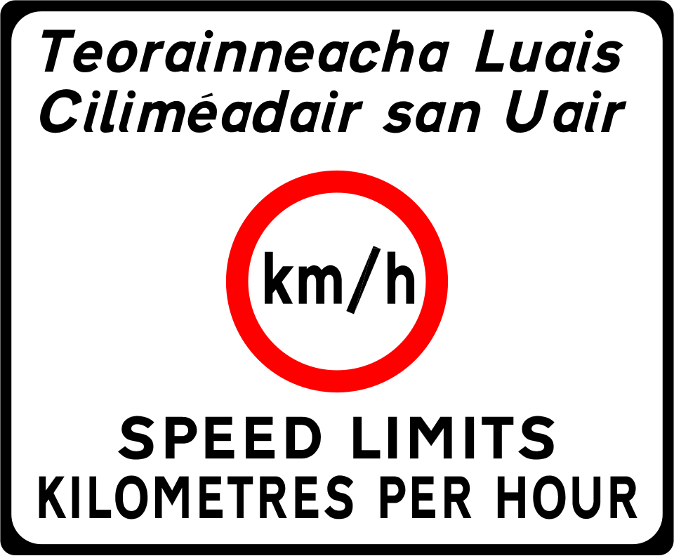
"What one earth is a kilometer? Where are my freedom units?"
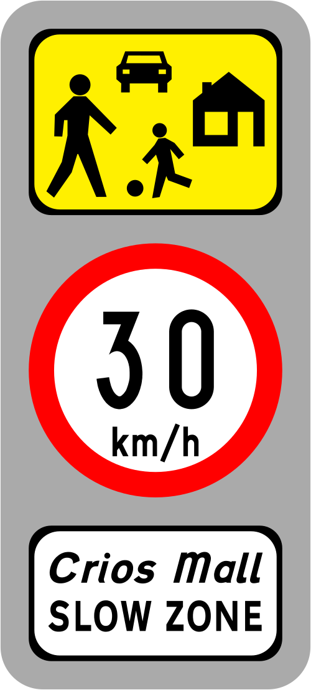
Slow down or go down.
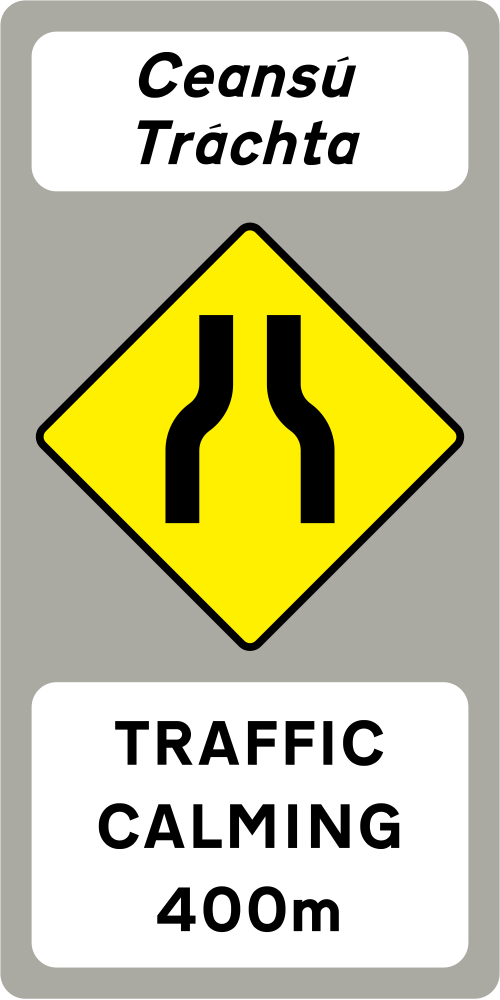
Calming down traffic?
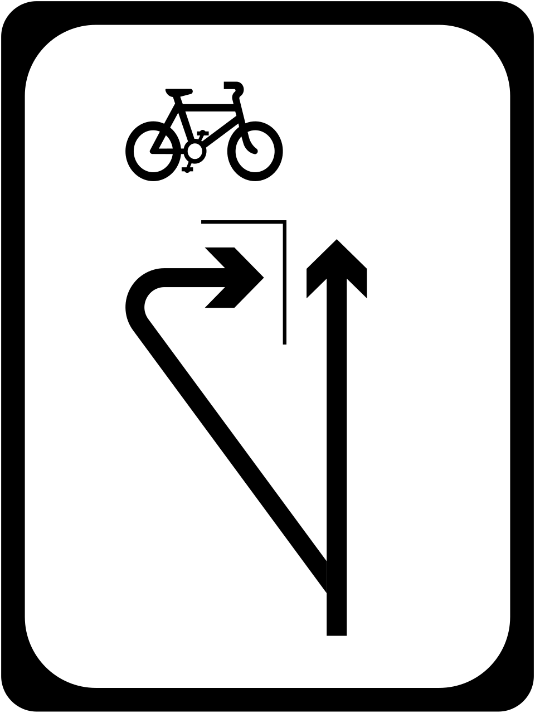
Two-Stage Right Turn (I give up)
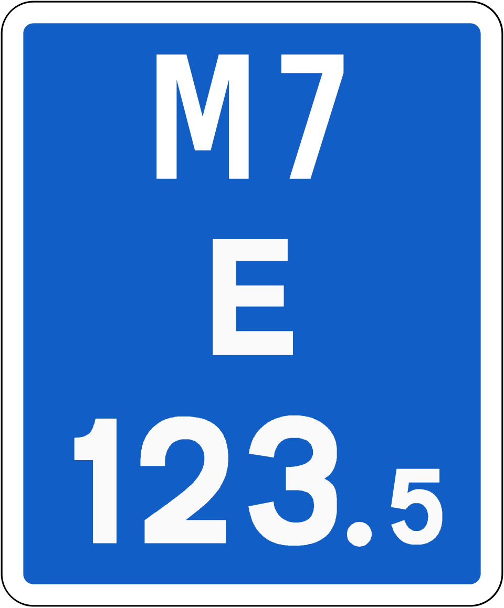
Location Reference Indicator Sign
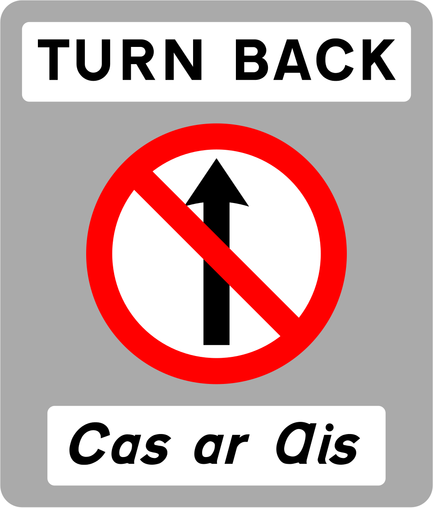
Gotta turn back.
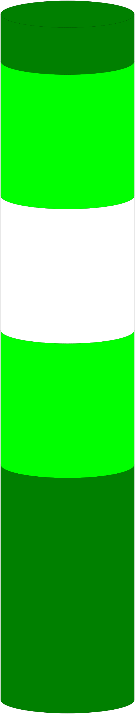
This looks strange.
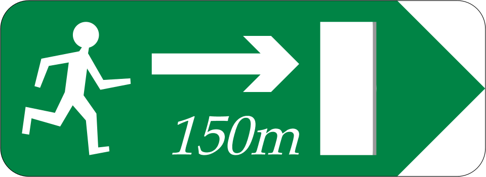
Pedestrians may Exit
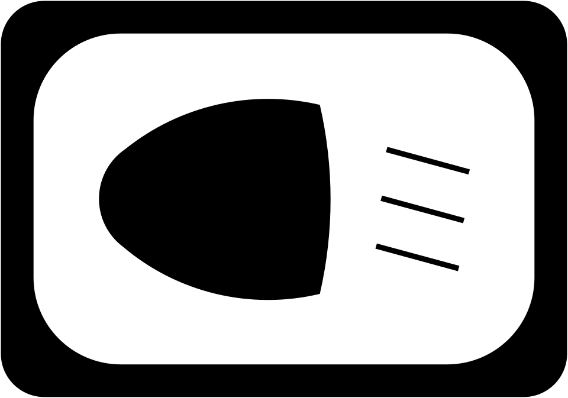
Looks like a sign you would only find in American Walmarts.
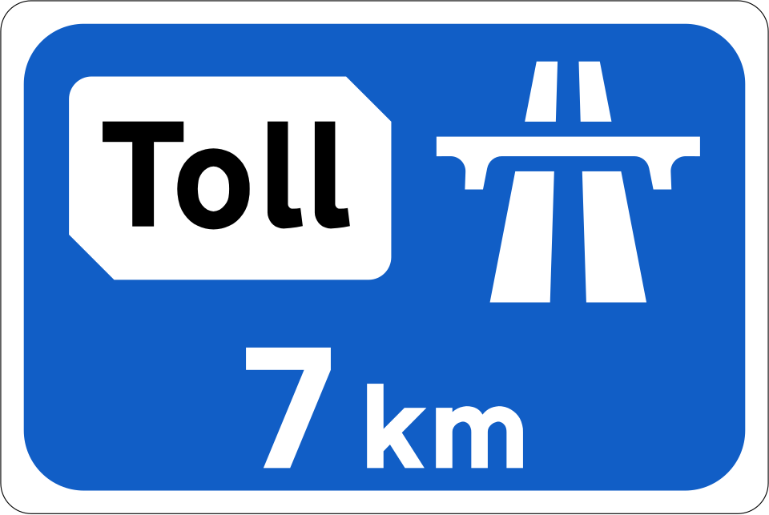
There is a toll road ahead.
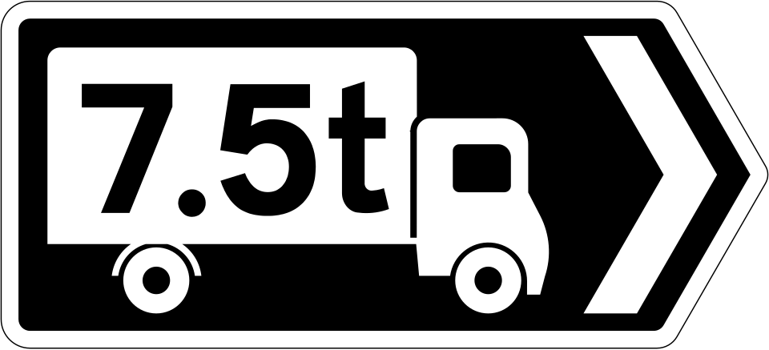
If it's heavy, go this way. (C'mon, body positivy is important)
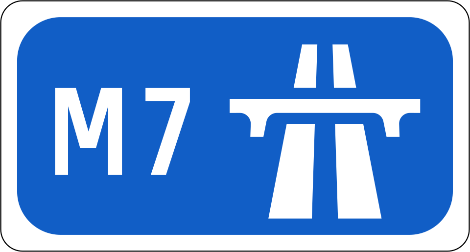
The beginning.